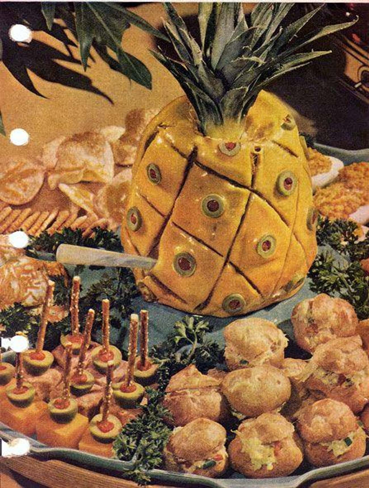

Liver Sausage Pineapple

Description:
From 1953's Better Homes and Gardens New Cookbook, this is liver sausage covered in Jell-O and mayo, molded into a pineapple shape and "studded" with olives.
Ingredients:
- 1 pound liver sausage
- 1 tablespoon lemon juice
- 1 teaspoon Worcestershire sauce
- 1/4 cup mayonnaise
- 2 teaspoons unflavored gelatine
- 1 cup mayonnaise
Steps:
- Mix 1 pound liver sausage with 1 tablespoon lemon juice, 1 teaspoon Worcestershire sauce, 1/4 cup mayonnaise.
- Shape around a jelly glass.
- Soften 2 teaspoons unflavored gelatine in 2 tablespoons cold water, dissolve over hot water; add 1 cup mayonnaise; chill.
- Frost “pineapple,” score; stud with sliced stuffed olives.
- Top with real pineapple top.